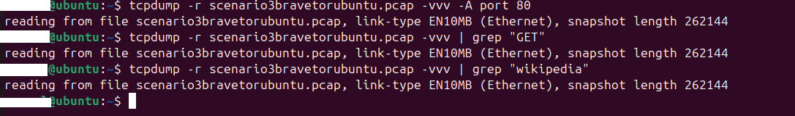
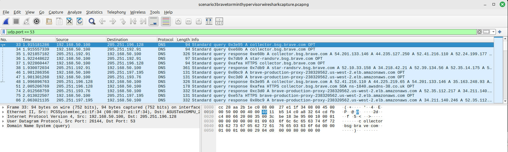
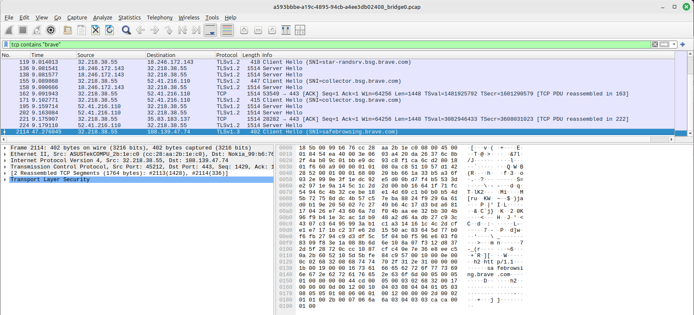

Brave has a built in feature to open a tab in Tor mode. Tor should be anonymous but does opening a new tab in the brave browser fulfill this expectation?
I set up a new virtual machine with Linux Ubuntu installed and Firefox for the first scenario. I am continuing to use the same operating system. I have now installed Brave too.
I will again look to capture packets from the same Ubuntu host that is browsing to see what exits the local host, from the Linux Mint hypervisor host, and finally on the OPNSense firewall between my router and the ISP ONT to see what exits my home network. I will also examine the Zenarmor NexGen Firewall Plugin live logs to watch for DNS resolution requests and connections.
I expect to see connections to Tor servers when I look at the traffic, but nothing beyond that.
The website used will be https://en.wikipedia.org/wiki/Brave_(web_browser). I set all devices to capture traffic, then load the webpage.
I capture all traffic using tcpdump and write it out to a file.
sudo tcpdump -w scenario3bravetorubuntu.pcapReading the packet capture file and filtering for port 53 shows all the DNS queries. Wikipedia is not in the list of requests so this must happen through the Tor connection. Listed here is the request to resolve safebrowsing.brave.com so this must be handling it.
Reading the packet capture file again and filtering for port 80 shows no HTTP traffic. Likewise there were no visible ‘GET’ commands and wikipedia did not appear anywhere in the packet capture. Even the domain name is hidden when using Brave’s Tor tab.
The computer running the virtual machine is a Linux Mint PC, and it is also running Wireshark set to capture the same traffic for comparison.
Wireshark is filtering out port 53 to view DNS queries. Some DNS requests show the brave.com domain, but wikipedia is not present here.
I apply a filter in Wireshark for wikipedia but nothing is seen.
Wireshark is now filtering for brave domains. This is similar to what was seen in tcpdump but shows a few additional brave.com servers.
DNS requests, and domain names were able to be seen in the traffic but complete website URLs, HTML content, etc, was not.
Inspecting the firewall’s live logs showed nothing related to wikipedia.
I loaded the packet capture from this firewall into Wireshark for further analysis.
Wireshark is filtering out port 53 to view DNS queries. Seen in here is the DNS request for safebrowsing.brave.com but no mention of wikipedia or Tor.
Wireshark is filtering for wikipedia reveals nothing.
Wireshark filtering for Brave shows encrypted traffic but nothing is able to be made out.
This is the last hop where I can capture packets. This is the same data that is being seen outside my home network.
I was not able to detect what any of the traffic was using Brave’s Tor tab and only saw requests to the safebrowsing.brave.com servers.
Tor is meant to be private, anonymous and in this case it lived up to its reputation. It also has the downside of being slow, but if you don’t trust the coffee shop you are connected through, or live in a country that free speech is threatened, than this seems to improve the security of data in transit.
That’s it!